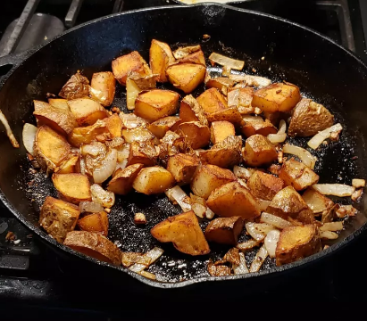

Fried potatoes

These fried, diced potatoes are not the healthiest dish, although it is delicious.
Ingredients:
- 5 medium Russet potatoes (2 to 2 1/2 pounds)
- 1/2 large onion, diced
- 1/4 cup vegetable or canola oil
- 1 ½ cups buttermilk
- 1/2 to 1 teaspoon salt
- 1/2 teaspoon black pepper
Recipe:
- Wash, peel, and slice the potatoes into 1/8-inch rounds.
- Heat a very large cast iron or nonstick skillet over medium-high heat.
Add the oil and heat until it starts to ripple.
- Add the potatoes evenly and sprinkle the onions over the top.
Cover and cook about 8 minutes.
- Remove the lid and add the salt and pepper. Flip the potatoes and continue to
cook for about 10 more minutes, flipping once or twice more, or until golden
brown and tender. Drain on paper towels if desired. Serve immediately.
Return to the homepage